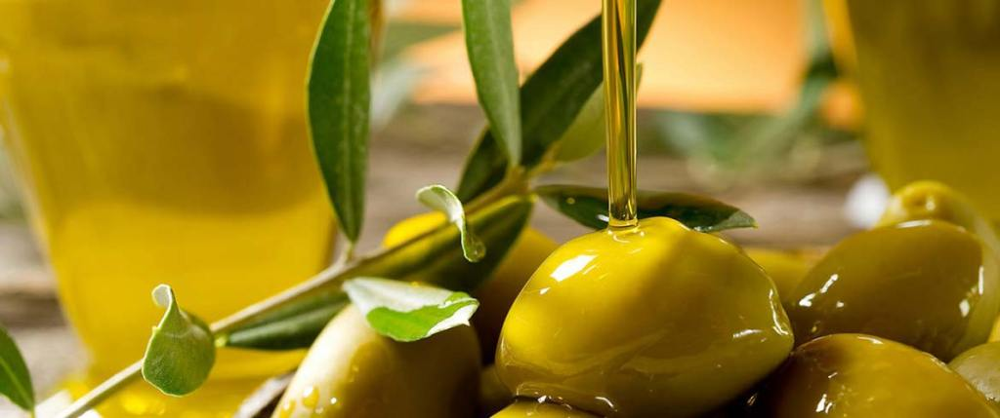
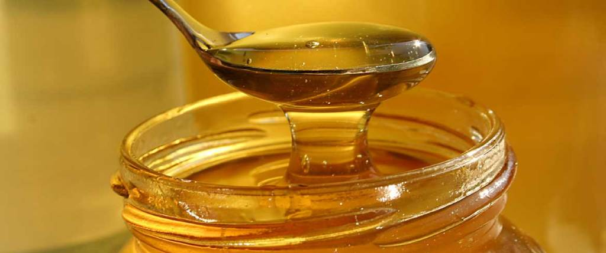
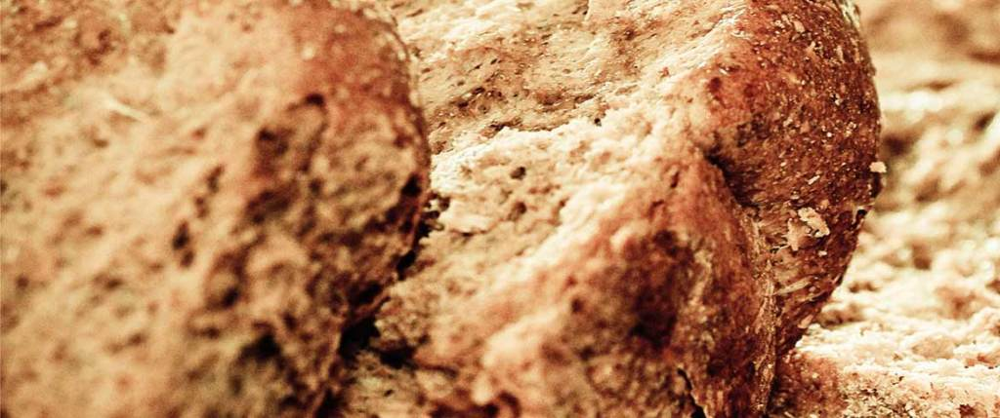
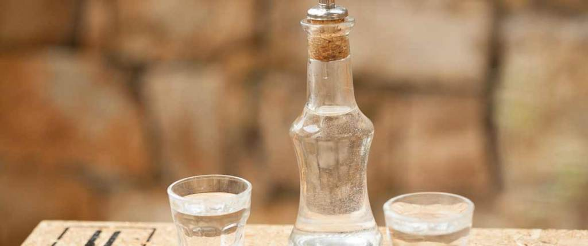
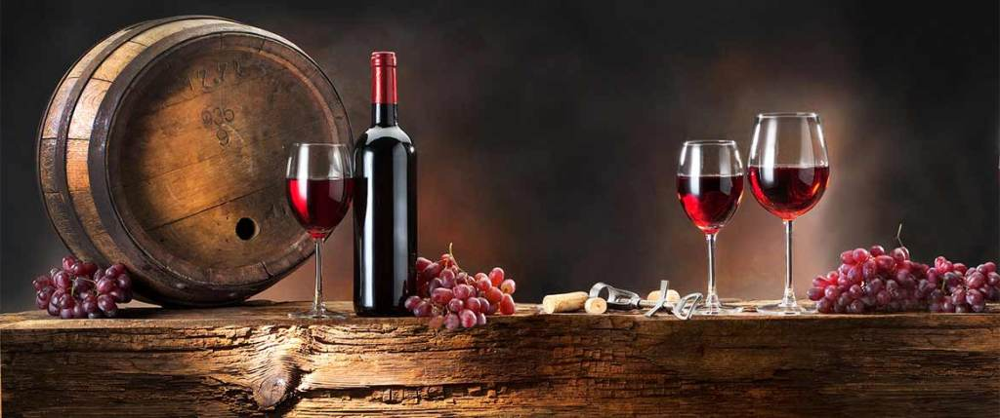
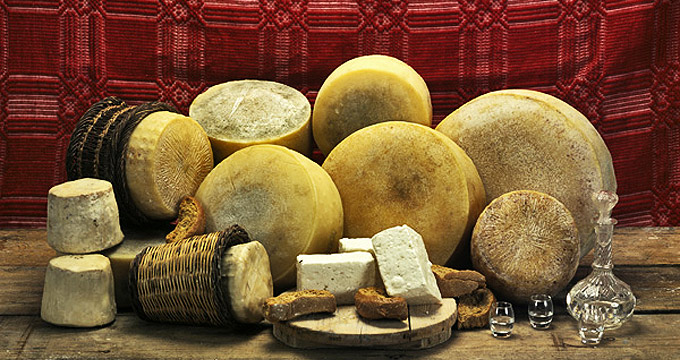

Είτε δοκιμάσετε ένα γκουρμέ γεύμα είτε απλώς χειροποίητο κρίθινο παξιμάδι με χοντρό αλάτι, λάδι, ελιές, ωμή αγκινάρα και τυρί, στην Κρήτη θα μαγευτείτε από τις γεύσεις. Ανακαλύψτε τα μυστικά της κρητικής διατροφής –η κουζίνα, άλλωστε, της Κρήτης θεωρείται το καλύτερο παράδειγμα της μεσογειακής δίαιτας, διεθνώς αποδεκτής ως το πιο υγιεινό και πλήρες πρόγραμμα διατροφής. Διάσημα προϊόντα της Κρήτης είναι: η κρητική γραβιέρα, τα μυρωδικά και τα άγρια χόρτα που φυτρώνουν στην Κρητική γη, όπως το σταμναγκάθι, η πικραλίδα, τα διάφορα είδη άγριου ή γλυκού ραδικιού. Περίφημη είναι η στάκα, ένα είδος κρέμας από πρόβειο γάλα που τη χρησιμοποιούν στο πιλάφι, σε πίτες, σε γλυκά.
Χαρακτηριστικά πιάτα που πρέπει οπωσδήποτε να δοκιμάσετε είναι: ο ντάκος (παξιμάδι) με τομάτα, οι χοχλιοί μπουμπουριστοί, τα καλιτσούνια, τα μυζηθροπιτάκια, όλα τα είδη από τηγανητές μικρές τυρόπιτες, το αρνάκι με σταμναγκάθι ή αγκινάρες αυγολέμονο, το γαμοπίλαφο, η σφακιανή πίτα. Διάσημη είναι και η τσικουδιά. Θα σας την κεράσουν σε όλη την Κρήτη. Την πίνουν από νωρίς το μεσημέρι ως αργά το βράδυ στα καφενεία, στα σπίτια, στα γλέντια και στις γιορτές.
Στην Κρήτη παράγονται σημαντικές ποσότητες βρώσιμων ελιών εξαιρετικής ποιότητας. Εκλεκτό προϊόν θεωρείται η ελιά θρούμπα, η οποία παράγεται από τη φυσική προσβολή του καρπού της Χονδρολιάς από τον μύκητα Phoma oleae. Μάλιστα, η ελιά «Θρούμπα Αμπαδιάς Ρεθύμνης Κρήτης» έχει χαρακτηριστεί ως προϊόν ΠΟΠ (Προϊόν Ονομασίας Προέλευσης).
Στον παρακάτω πίνακα παρουσιάζεται η παραγωγή της Κρήτης σε βρώσιμες ελιές, ανά Νομό.
| Παραγωγή σε tn (2004) |
Μ.Ο 1994-2004 | Ηράκλειο | 474 | 578 |
|---|---|---|
| Λασίθι | 88 | 681 |
| Ρέθυμνο | 42 | 161 |
| Χανία | 332 | 557 |
| Κρήτη | 936 | 1910 |
| Προϊόντα | Περίγραφη | Εικόνα | Mέση τιμή πόλησης σε € | Ελαιόλαδο | Αν ένα προϊόν αποτελεί σημείο αναφοράς για την Κρήτη, αυτό δεν είναι άλλο από το ελαιόλαδο.Το προϊόνα αυτό φημίζεται για την κορυφαία ποιότητά του, αφού το έδαφος και το κλίμα του νησιού ευνοούν την καλλιέργεια των ελαιόδεντρων και, κατά συνέπεια, την παραγωγή του ελαιολάδου. |  | 3-250 /lt |
|---|---|---|---|
| Μέλι | Ιδιαιτέρως υγιεινή και θρεπτική τροφή, το μέλι αποτελεί ένα από τα τοπικά προϊόντα της Κρήτης.Το μέλι που παράγεται στο νησί είναι εξαιρετικής ποιότητας,γεγονός που οφείλεται τόσο στη γνώση και τη φροντίδα των έμπειρων μελισσοκόμων αυτού του ευλογημένου τόπου όσο και στις ιδανικές κλιματολογικές συνθήκες που επικρατούν σε όλη την έκτασή του. |  | 7.5-85 /lt |
| Παξιμάδια | Ένα από τα πιο χαρακτηριστικά προϊόντα της κρητικής διατροφής, η παραδοσιακή κριθαροκουλούρα ολικής άλεσης με ελαιόλαδο, χρησιμοποιείται ως επί το πλείστον στην παρασκευή του γνήσιου κρητικού ντάκου. |  | 1.50-15/lt |
| Ρακί | Γνωστή και ως τσικουδιά, η κρητική ρακή είναι το πιο χαρακτηριστικό ποτό του νησιού. Αποτελούμενο από περίπου 37% αλκοόλ, είναι ιδιαιτέρως δυνατό και προέρχεται από στέμφυλα, τα τσίκουδα των σταφυλιών που μένουν μετά το πάτημά τους για την εξαγωγή του μούστου κατά τη διαδικασία παραγωγής του κρασιού. |  | 5-90 /lt |
| Κρασί | Η σχέση της Κρήτης με το κρασί ξεκινάει από την προϊστορική εποχή, τότε που το κρασί συγκαταλεγόταν ανάμεσα στα προϊόντα που συνέβαλαν στην ευμάρεια και την ανάπτυξη του νησιού. |  | 20-160 /lt |
| Τυροκομίκα Προϊόντα | Η ενασχόληση με την κτηνοτροφία και την παραγωγή τυροκομικών προϊόντων είναι ιδιαιτέρως διαδεδομένη και φημισμένη σε ολόκληρη την Κρήτη. |  | 5 - 25 /kg |